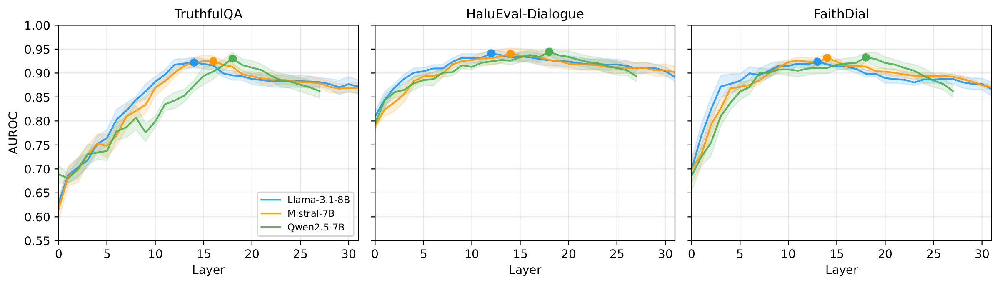
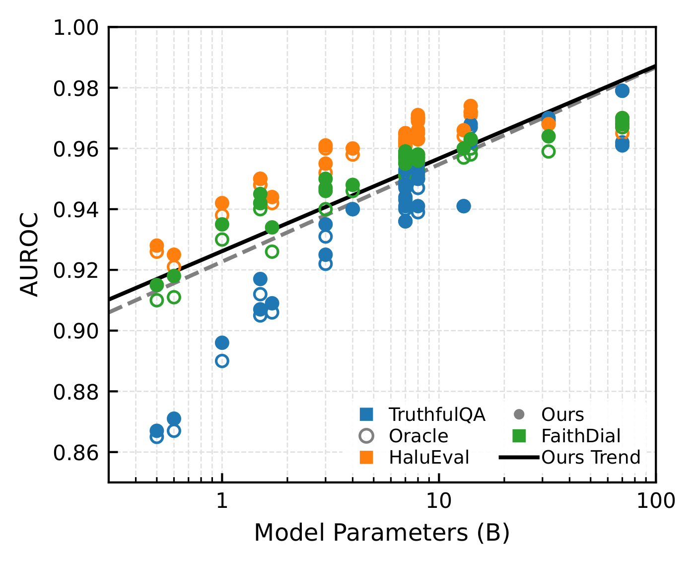
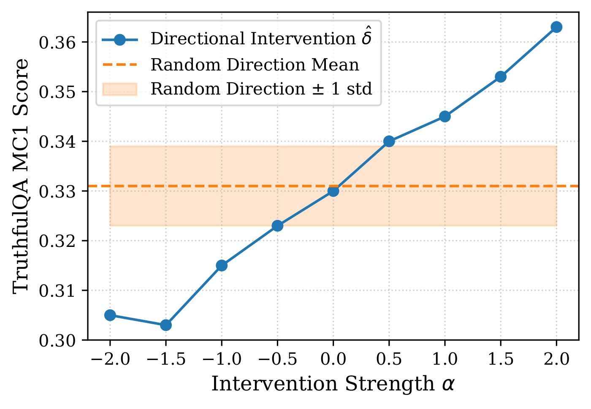

The Hallucination Signal Is a Mean Shift: Why Simple Probes Suffice
EMNLP 2026 (Main Conference)
1Korea University 2Konkuk University
*Corresponding authors

Abstract
Hidden-state probes effectively detect LLM hallucinations, but the geometry of the signal remains poorly characterized, driving increasingly complex probe architectures. Across three 7B-scale models and three datasets in a paired-example paradigm, we find the signal overwhelmingly dominated by a single mean-shift component, and removing this direction collapses detection to chance. Shrinkage linear discriminant analysis closes about 73% of the gap between 1D and full-dimensional classifiers, so apparent architectural complexity largely reflects high-dimensional covariance estimation difficulty rather than exploitable non-linearity. A simple L2-regularized logistic regression (0.952 AUROC) bounds or outperforms twelve controlled architectural alternatives, and our multi-layer aggregation exceeds CLAP cross-layer attention probing under matched paradigm. Because the signal spans a contiguous layer band, LayerMix aggregates it to match oracle-layer performance without oracle access. Our claims characterize the geometry within the controlled paired-example paradigm. Our code is available at https://
The Signal Is a Mean Shift
Let \(\boldsymbol{\mu}_0\) and \(\boldsymbol{\mu}_1\) be the centroids of factual and hallucinated hidden states, and \(\boldsymbol{\delta} = \boldsymbol{\mu}_1 - \boldsymbol{\mu}_0\) the mean-shift direction. Averaged over 3 models × 3 datasets, removing \(\boldsymbol{\delta}\) collapses detection to chance (0.499). The 1D projection onto \(\boldsymbol{\delta}\) alone achieves 0.834 AUROC, and Cohen's \(d\) along it ranges 1.2–1.6 although the direction accounts for less than 3% of total variance.
The mean shift is necessary but not sufficient. The 1D projection underperforms L2-regularized logistic regression by 0.09–0.16 AUROC in every condition (0.834 vs. 0.952 on average). Shrinkage LDA reaches 0.920 mean AUROC and closes about 73% of that gap, so the apparent complexity largely reflects high-dimensional covariance estimation difficulty rather than exploitable non-linearity.
| Condition | AUROC |
|---|---|
| Unreg. LR (all dims) | .928 |
| Mean-shift only (1D) | .834 |
| Mean-shift + 4 residual (5D) | .891 |
| Without mean-shift | .499 |
| Mean-centered (oracle) | .503 |
Mean-shift decomposition (avg. 9 conditions). “Unreg. LR” denotes unregularized logistic regression, used to enable clean decomposition into mean-shift and residual components without regularization-induced shrinkage.
The Signal Distributes Across Layers
The best single layer differs by model: on TruthfulQA, L14 for Llama, L16 for Mistral, L18 for Qwen. A fixed-layer heuristic therefore cannot be optimal across conditions. The signal instead concentrates in a model-specific contiguous band, and averaging predictions from the layers selected by cross-validation outperforms any single layer in all 9 conditions (by +0.0004 to +0.0086 AUROC).


LayerMix
LayerMix identifies the informative layer band via cross-validation, trains independent probes on the top-\(K\) layers, and averages their predictions. It is not presented as a complex algorithmic innovation, but as a consequence of the geometric analysis.
-
Stage 1
Layer scoring
For each layer, evaluate an L2-regularized logistic regression probe with stratified 5-fold cross-validation. The layer's score is its mean AUROC across folds, so the ranking uses only training data and replaces oracle selection.
-
Stage 2
Layer selection
Select the top-\(K\) layers, with \(K = 5\) as the default. In practice the selected layers form a contiguous block around the model's most informative region, for example layers 16–20 for Qwen2.5-7B.
-
Stage 3
Aggregation
Train one L2-regularized LR probe (\(C = 0.001\)) on the full hidden state of each selected layer and average the predictions uniformly. No learned aggregation weights are needed.
\[\hat{p}(x) = \frac{1}{K} \sum_{\ell \in \mathcal{L}^*} f_\ell\bigl(\mathbf{h}^{(\ell)}(x)\bigr)\]
Here \(\mathcal{L}^*\) is the set of selected layers, \(f_\ell\) is the probe trained on layer \(\ell\), and \(\mathbf{h}^{(\ell)}(x)\) is the layer-\(\ell\) hidden state of a test input \(x\).
The total overhead is about 35 seconds. Scoring all layers takes about 30 seconds on a single GPU for \(N = 5{,}000\) examples, and training the \(K\) probes adds about 5 seconds.
Main Results
The comparison covers three 7B-scale base models (Llama-3.1-8B, Mistral-7B, Qwen2.5-7B) and three benchmarks: TruthfulQA (TQA), HaluEval-Dialogue (HE), and FaithDial (FD). LayerMix achieves 0.954 mean AUROC across 9 conditions, matching the single-layer oracle (0.952) without post-hoc oracle layer access. The best zero-overhead heuristic, middle-layer LR, achieves 0.941. LayerMix exceeds CLAP in 9/9 conditions (0.954 vs. 0.928 mean AUROC), and all-layer averaging (0.944) underperforms LayerMix.
| Method | Type | TQA | HE | FD | Mean |
|---|---|---|---|---|---|
| Training-free baselines | |||||
| Perplexity | unsup. | .594 | .445 | .560 | .533 |
| Entropy | unsup. | .576 | .476 | .536 | .529 |
| Self-eval P(True) | unsup. | .621 | .812 | .548 | .660 |
| Verbalize | unsup. | .618 | .768 | .541 | .642 |
| LLM-Check | unsup. | .500 | .500 | .500 | .500 |
| DoLa | unsup. | .607 | .553 | .579 | .580 |
| INSIDE | unsup. | .559 | .594 | .542 | .565 |
| Unsupervised / semi-supervised probes | |||||
| HaloScope† | unsup. | .576 | .658 | .584 | .606 |
| CCS | unsup. | .564 | .519 | .528 | .537 |
| TSV† | semi-sup. | .812 | .677* | .642* | .710 |
| ICR Probe | sup. | .567 | .628 | .540 | .578 |
| Subspace probes (single layer, oracle) | |||||
| SVD+LR (\(k = 100\)) | sup. | .925 | .940 | .921 | .929 |
| PLS-DA+LR (\(k = 2\)) | sup. | .908 | .921 | .900 | .910 |
| PLS-DA+LR (\(k = 5\)) | sup. | .926 | .948 | .948 | .941 |
| Full-dim probes (single layer) | |||||
| SAPLMA (MLP) | sup. | .908 | .930 | .918 | .919 |
| Last-layer LR | sup. | .895 | .936 | .917 | .918 |
| Middle-layer LR | sup. | .924 | .954 | .946 | .941 |
| Oracle LR | sup. | .940 | .961 | .954 | .952 |
| Multi-layer aggregation | |||||
| All-layer avg | sup. | .916 | .957 | .958 | .944 |
| CLAPa | sup. | .896 | .953 | .935 | .928 |
| LayerMix (Ours) | sup. | .942 | .962 | .957 | .954 |
Scroll sideways to see every column.
Hallucination detection AUROC averaged over three 7B-scale base models. Bold marks LayerMix and underline marks the single-layer oracle. †Official implementation. *Adapted for dataset-specific pseudo-labeling. aCLAP cross-layer attention probe, trained from the official implementation on the same cached multi-layer hidden states under 3-fold cross-validation.
All methods are evaluated on identical pre-extracted hidden states under the paired-example paradigm. Methods originally designed for dynamic generation (HaloScope, ICR Probe, TSV, CLAP) are therefore evaluated outside their native deployment regime, and their published numbers under that regime are not in question.
Scaling Across 25 Models
Across 25 models spanning 5 families (0.5B to 70B), detection AUROC increases with parameter count. On TruthfulQA, small models (<2B) start in the 0.86–0.91 range, while Llama-3.1-70B approaches 0.98. LayerMix tracks or exceeds the single-layer oracle across 72 of 75 evaluated conditions (96.0%).


Is the Mean Shift an Artifact?
Several observations argue against a superficial explanation such as length or style. Length-only AUROC (≤ 0.610) is far below probe performance, random-label controls yield chance AUROC, and the mean-shift dominance replicates across Llama, Mistral, and Qwen. In an intervention on Qwen2.5-7B, reinforcing the unit mean-shift direction \(\hat{\boldsymbol{\delta}}\) degrades truthfulness while projecting away from it improves truthfulness. In the sweep below, positive \(\alpha\) projects away from the hallucination direction and negative \(\alpha\) reinforces it. The effect size across the full sweep is 0.058 MC1 (17.4% relative), and the same sweep along 10 random directions shows no systematic trend.


The intervention remains a single-model, single-dataset pilot, and confounds within the paired-example paradigm cannot be definitively excluded without free-form generation tests. More broadly, the conclusions are paradigm-bounded statements about the controlled paired-example setting, not universality claims across all detection scenarios.
BibTeX
@article{lee2026hallucination,
title = {The Hallucination Signal Is a Mean Shift: Why Simple Probes Suffice},
author = {Lee, Jungseob and Seo, Jaehyung and Lim, Heuiseok},
journal = {arXiv preprint arXiv:2608.28930},
year = {2026},
url = {https://arxiv.org/abs/2608.28930}
}